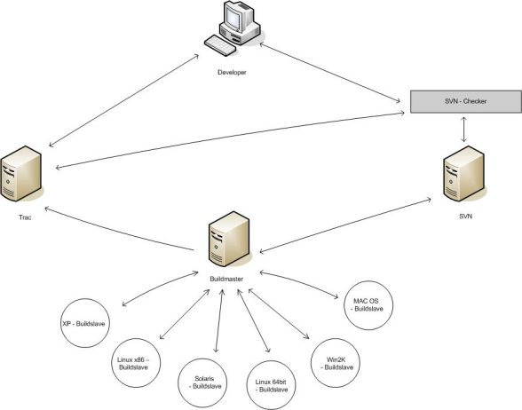

| Author: | Steven Mohr |
|---|---|
| Date: | 2008-07-27 |
| Revision: | 5043 |
| Status: | Draft |
The goal of the project is to create a system enviroment which automates the core tests and the creation of new TurboGears [2] eggs. It should also create eggs [5] for the dependencies. The second goal was to install SVNChecker [1] and to configure it. This goal was replaced by the creation of a webinterface which should be used to create new build tasks. SVN Checker will be installed after Google Summer of Code.
To create this test and build environment we use BuildBot [7]. With BuildBot you have one machine, called buildmaster, and a lot of other machines called build slaves. For every supported OS or hardware arcitecture we need three slaves: one for Python 2.3, one for 2.4 and one for 2.5.
| OS | Python2.3 | Python2.4 | Python2.5 |
|---|---|---|---|
| Debian x86 | X | X | X |
| Ubuntu x64 | X | X | X |
| Solaris | o | X | X |
| Windows XP | X | X | X |
| Windows 2003 | X | X | X |
| Windows Vista | X | X | X |
BuildBot creates and manages the bot system.
VirtualEnv [3] creates independent python installations to isolate the build enviroment from the rest of the system. So it guarantees proper build results.
Nose [4] is an unittest framework for python. The unit tests are important to keep the code valid.
The build master starts the builds and sends the signal to start to its slaves. It also collects the results and presents them via a webinterface [6]. This interface also allows to start builds manually. The build master will be created as a part of this project.
The build slave is the component where the build takes place. It downloads all needed files from SVN (e.g. source or scripts) and distributes the results (uploads created eggs) and publishes build reports in wiki [10].
This is the way the eggs are created:
Binary eggs will be created for the following dependencies:
The build system creates eggs for TG 1.0, 1.1 and 2.0
This is the way the eggs are created:
The eggs will be uploaded to a TurboGears EggBasket [8] instance.
The BuildBot system should also create the TurboGears documentation.
The concept of the web interface is described in a different file (svn.turbogears.org/build/notes/bb_config.pdf)
SVNChecker is a framework which was designed to assist users to create hook scripts for SVN. SVNChecker has a number of predefined classes which allow an easy integration of bug tracking systems or coding style checkers. If a critical test fails, the check in will be rejected.
Functions:
| [1] | http://www.svnchecker.tigris.org |
| [2] | http://www.turbogears.org |
| [3] | http://pypi.python.org/pypi/virtualenv |
| [4] | http://www.somethingaboutorange.com/mrl/projects/nose/ |
| [5] | http://peak.telecommunity.com/DevCenter/setuptools |
| [6] | will be added |
| [7] | http://www.buildbot.net |
| [8] | http://www.chrisarndt.de/projects/eggbasket/ |
| [9] | http://svn.turbogears.org/ |
| [10] | http://docs.turbogears.org/ |